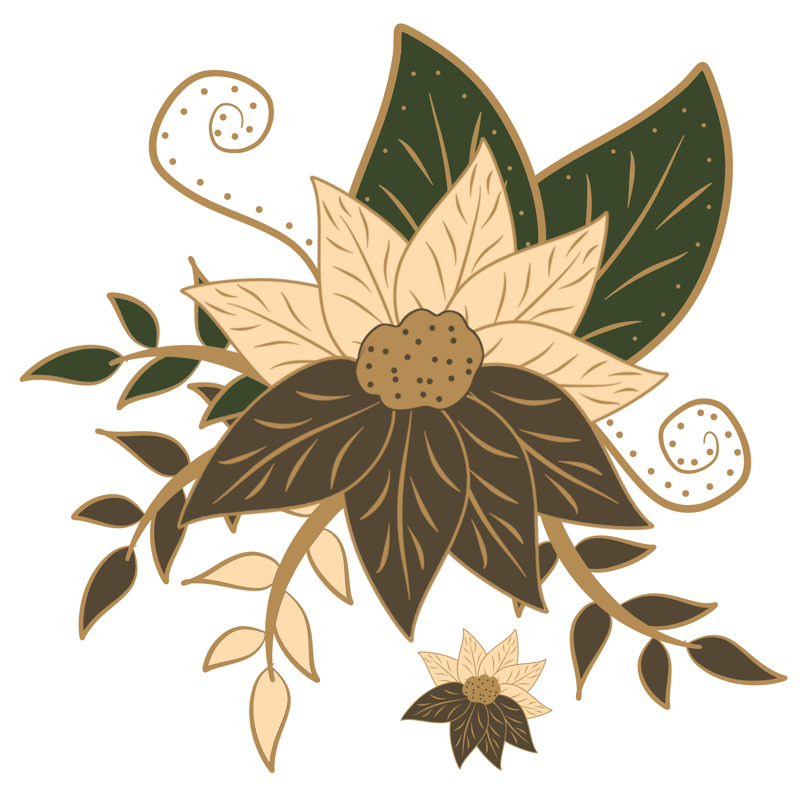
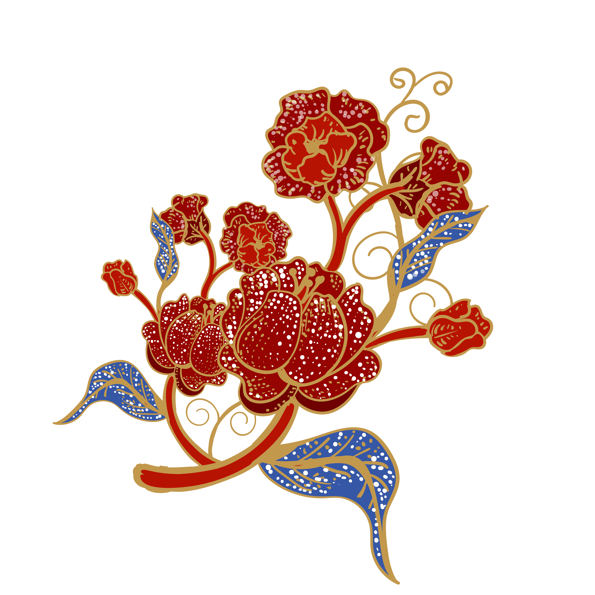

Walimatulurus
Sabtu • 5 Disember 2026
Walimatulurus
Tarik Ke Bawah Untuk Mula
05 . 12 . 2026
Dengan segala hormatnya kami menjemput Dato' | Tuan | Puan | Encik | Cik hadir ke majlis perkahwinan anakanda kami
&
pada hari
Sabtu | 5 Disember 2026
bertempat di
Balairong KIPMall
Ayer Keroh, Melaka
pada jam
8.00 Malam - 11.00 Malam
Sila balas sebelum 1 November 2026
Maklum balas direkodkan.